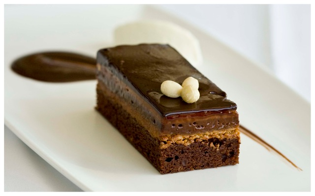

Combine all ingredients in a medium mixing bowl. Chill if desired and serve.
Five Spice Turkey
1 Tbsp grapeseed oil
1/8 teaspoon Chinese Five Spice powder
1 tsp dried orange peel
2 Tbsp soy sauce
juice and zest of 1 orange
1/2 large sweet onion, diced
1 Tbsp cilantro, roughly chopped
1 1/3 pounds ground turkey
1/4 cup wasabi and soy almonds, such as Blue Diamond, chopped
sesame seeds to taste
whole romaine leaves, rinsed
Mustard Cilantro Mayo
3/4 cup mayonnaise
1 1/2 Tbsp Hot and Sweet mustard, such as Trader Joe’s
1 Tbsp cilantro, chopped
To make the ground turkey, heat grapeseed oil in a large saucepan over medium heat. Add the next six ingredients and saute until onion has softened (about 3-5 minutes). Add the ground turkey. Cook, stirring occasionally, until the turkey has been cooked through.
Make the mayo by combining the three ingredients in a small bowl. Stir until well combined.
To assemble the lettuce wraps, sprinkle some ground turkey on each piece of romaine. Drizzle with mayo and then sprinkle chopped almonds and sesame seeds on top.
Ingredients
1 large sweet potato, cut into half-inch cubes
2 cups small brussel sprouts, halved
4 small carrots, chopped
1 large onion, chopped
2 medium ribs celery, chopped
2 cups ham, cut into half-inch cubes
1 10 oz bag frozen corn
1 14 oz bag frozen peas
1 20 oz bag split peas
4 cups water
2 32 oz boxes of chicken stock
1 tsp ground mustard
1 tsp celery salt
1 Tbsp fresh thyme
1/4 fresh parsley
1 1/2 Tbsp yellow mustard, such as French’s
2 Tbsp white vinegar
salt and pepper to taste
1 Tbsp olive oil
Heat the olive oil in a large pot over medium heat. Add the sweet potatoes and cook, stirring occasionally, about 3-4 minutes. Add the brussel sprouts and carrots and cook an additional 4-5 minutes. Add the onions, ham, and celery and cook an additional 3-4 minutes. Add 1 box of chicken stock and the water to the pot. Rinse the split peas in a colander and sort them. Add the split peas to the pot and bring to a boil. Boil soup for about 30 minutes (or according to package instructions) with lid partially ajar. Add the ground mustard, celery salt, and thyme and cook for an additional 20 minutes with lid on. Add frozen peas and corn and cook an additional 10 minutes with lid on. Add mustard, parsley, white vinegar, and as much of the remaining chicken stock as needed to reach the desired consistency.

Ingredients
3/4 cup unsalted butter, melted
1 1/2 cup granulated sugar
3/4 cup all purpose flour
3/4 cup dark chocolate unsweetened cocoa powder
3 eggs
1 cup semi-sweet morsels (optional)
Directions
In a glass bowl, melt butter in microwave for 30 seconds to one minute. Add sugar, flour, cocoa and eggs. Stir with a spoon until well combined. Fold in morsels.
In a glass bowl, melt butter in microwave for 30 seconds to one minute. Add sugar, flour, cocoa and eggs. Stir with a spoon until well combined. Fold in morsels.
Cool completely. Top with powdered sugar or your favorite frosting recipe. ENJOY.